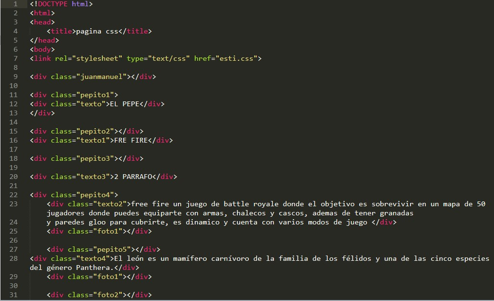

INFORME
CLASE 2: Durante esta clase el rpofe nos mastro varios ejemplos de variables en c++,
algunas de esas variables son if y cout tambien mostrandonos como letras o palabras
pueden tener valor como por ejemplo:
pablo==350,ricardo==400
y nos mostro como podemos cambiar el codigo desde github si deseamos cambiarlo
CLASE 3: En esta clase nos mostraron el orden en un trabajo de c++
EJEMPLO:
LIBRERIAS
FUNCIONES Y CONSTANTES
MAIN PRINCIPAL
PARCIAL
Actividad 3 Menú

COMENTARIO
Este trabajo me gusto bastante, es muy practico ya que ponemos en practica lo aprendido y nos deja a nuestra imaginacion como podemos hacerlo y plantear un menu vistoso y bueno siguiendo las indicaciones y lo aprendido en clase.
Actividad 4


FINAL